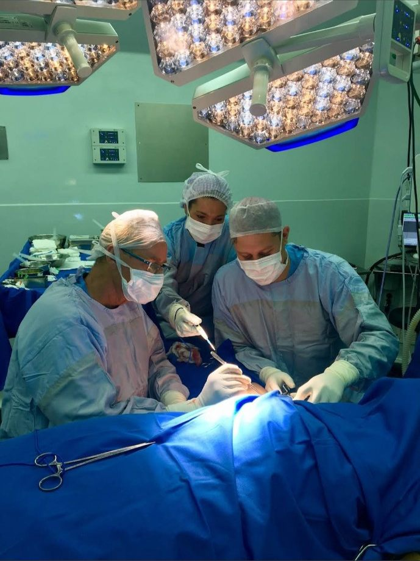
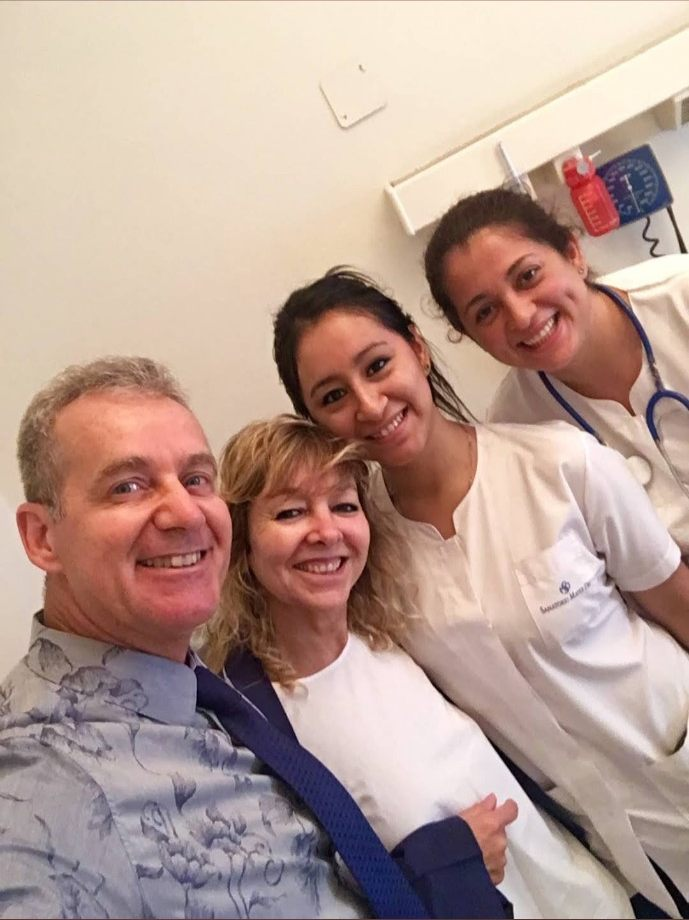
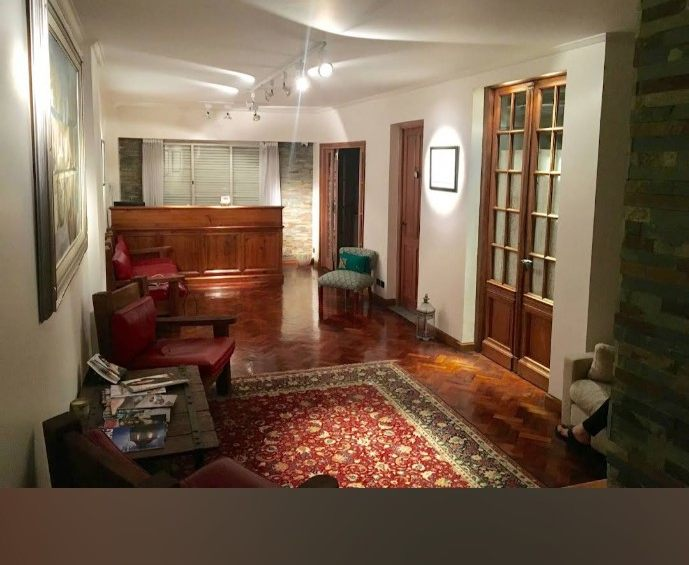

★★★★★
“Gustavo es un excelente profesional y persona. Despejó todas mis dudas y me asesoró correctamente.”
BB
Belén BalzariniReseña pública de Google
Conocé las opciones, resolvé tus dudas y conversá con el doctor sobre tu caso. La primera decisión es contar con información médica clara y personalizada.

Opiniones públicas de pacientes en Google.
“Gustavo es un excelente profesional y persona. Despejó todas mis dudas y me asesoró correctamente.”
“El mejor cirujano, transmite muchísima confianza. Me operé hace 1 año y medio, feliz con mis resultados, volvería mil veces.”
“Mi vida mejoró 100% después de operarme con él. Es un divino, súper recomendado.”
Cada procedimiento requiere evaluación médica individual. Consultá por tu caso y conocé alternativas, riesgos y recuperación.
Información sobre procedimientos de remodelación corporal y evaluación de cada caso.
Conversá sobre objetivos, opciones quirúrgicas, riesgos y tiempos de recuperación.
Orientación sobre alternativas faciales según la evaluación y las necesidades individuales.
Consulta sobre procedimientos de contorno y las posibilidades para cada caso.
Consultas por reparación de heridas, lesiones u otras necesidades reconstructivas.
Un espacio para conversar sobre tu inquietud y conocer las alternativas adecuadas.


En las reseñas públicas, pacientes destacan la claridad al explicar, el trato cercano y el acompañamiento durante el proceso.
Una cirugía es una decisión personal y médica. Conversá con el profesional sobre los beneficios esperados, los riesgos, las alternativas y el proceso de recuperación antes de avanzar.
Completá tus datos y el área que querés consultar. Se abrirá WhatsApp con un mensaje preparado para enviar al consultorio.
Importante: el formulario no reserva un turno automáticamente ni confirma disponibilidad.
Consultorio del Dr. Gustavo Ghiglione
Av. Callao 1975, 1.º A